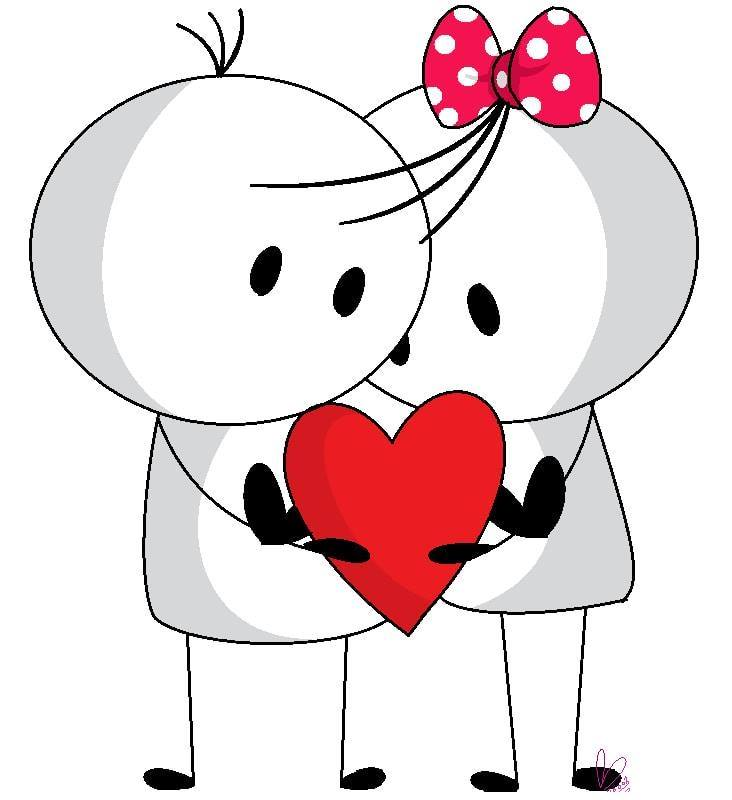
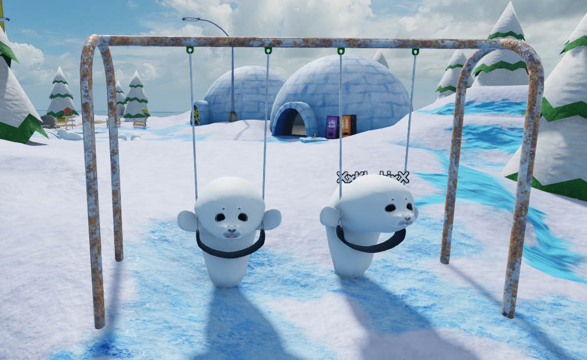

De el precioso para la preciosa

Hola mi amor, se que probablemente no estes acostumbrada a algo como esto
primero que nada, me gustaria decirte, feliz primer mes siendo mi novia.
No me quedan mas que palabras de agradecimiento por la mandera en la que tu te has comportado conmigo siendo una chica
bastante linda, amorosa, bonita, hermosa y muchas cosas mas que no se pueden describir con simples palabas, muchas gracias
por quedar conmigo apesar de las circunstancias, el echo de ese separamiento de unos dias me habia bajoneado, pero al ver
el esfuerzo que los dos hicimos para estar juntos en ese lapso de tiempo me hizo comprender que esto que sentimos
es algo inquebrantable que los dos a lo largo de este mes hemos forjado.
Algo que nada ni nadien podra romper, muchas gracias por hacerme tan feliz, siempre con tus locuras, tus muestras de amor, el hate que existe, el poder llamarte "¿mi hater o mi novia?"
eso estoy seguro de que ninguna otra pareja lo tiene, muchas veces me pongo a pensar ¿Que chingados hice para que esa mujer tan preciosa, tuviera ese cambio que solo yo puedo ver?
es un lado que jamas crei conocer de ti, quien iba a imaginar que esa mujer tan fria que solias ser antes, ahora asi de la nada me mande videos en insta, me diga cosas bonitas, me haga detalles
nadie se imagina eso, por eso yo siempe lo presumo.
De la misma forma tu lograste un cambio radical en mi, lograste descongelar una parte que yo crei jamas se la volveria a mostrar a alguien, pero bien lo dicen "despues de la lluvia
dale el arcoiris", gracias por averme aceptado a pesar de mi pasado, se que es algo que jamas podre borrar, pero de ahora en adelante la unica persona que me importa eres tu,
tu confiaste en mi asi como yo en ti y por eso agradezco que tu ese 14 de enero hayas aceptado ser mi novia apesar de tantos conflictos por los que venia, ya que pues tu tambien
tenias tus problemas y nos ayudamos mutuamente. En ese preciso momento yo senti esta hermosa conexion entre nosotros.
Asi que feliz primer mes de muchos siendo mi novia mi amor, quiza no soy el mejor redactando lo que siento, pero queria expresarme,
Recuerda que aqui estare para ti en las buenas y en las malas mi amor

TE AMOOOO!